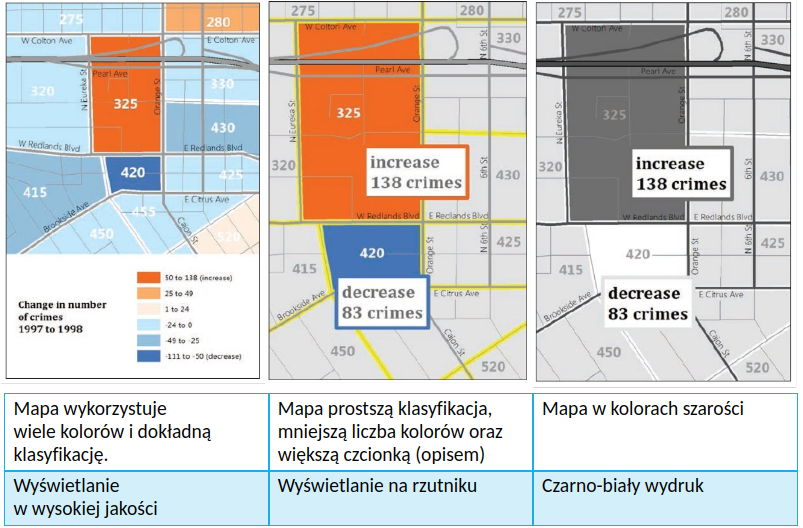

6 Formy prezentacji wyników badań
Wyniki badań mogą być prezentowane na kilka sposobów. Do najczęściej używanych form należą:
- Poster/plakat naukowy
- Prezentacja multimedialna
- Raport, krótki artykuł
W zależności od formy prezentacji (poster, prezentacja multimedialna, pisemny raport) stosuje się różne formy wizualizacji kartograficznej. Inaczej przygotujemy mapę do prezentacji w pisemnym/drukowanym raporcie, a inaczej w formie posteru.
6.1 Dobór wizualizacji do formy prezentacji
Wizualizacja (wykresy, mapy) powinny być tworzone z myślą o formie prezentacji. Poster, prezentacja multimedialna, czy pisemny raport wymagać będą inaczej przygotowanych ilustracji.
Poniższe ilustracje pochodzą z książki Designing Better Maps: A Guide for GIS Users Cynthi A. Brewer i pokazują tą samą mapę przygotowaną do 3 różnych form prezentacji. 
6.1.1 Prezentacja multimedialna na rzutniku
Czynniki wpływające na czytelność
- Jakość rzutnika
- Oświetlenie w pomieszczeniu
- Odległość
- Krótki czas na zapoznanie się z ilustracją na slajdzie
Przygotowanie ilustracji
- Uwzględnienie znacznie różniących się kolorów
- Odpowiednio dużo czcionka
- Mniejsza szczegółowość
6.1.2 Pisemny raport
Czynniki wpływające na czytelność
- Czy raport będzie czytany na monitorze, czy drukowany?
Przygotowanie ilustracji wyświetlanej na ekranie komputera
- Ilustracja może mieć kolory, które mocno się nie różnią
- Ilustracja może zawierać więcej szczegółów
Przygotowanie ilustracji do drukowanego raportu (na czarno-biało)
- Kolorowa ilustracja musi na tyle różniące się kolory, aby były nadal rozróżnialne po wydrukowaniu raportu na czarno-białej drukarce
- Najlepszym rozwiązaniem jest uwzględnienie ilustracji w skali szarości
- Mniej szczegółów
6.1.3 Poster
Czynniki wpływające na czytelność
- Jakość wydruku: poster drukowany jest w formacie A1, A0 lub większym
- Odległość
Przygotowanie ilustracji
- Odpowiednio duża czcionka widoczna z odległości 1,5 m
- Wysoka rozdzielczość ilustracji
- Mniej szczegółów niż na ilustracji załączonej do pisemnego raportu czytanego na ekranie komputera